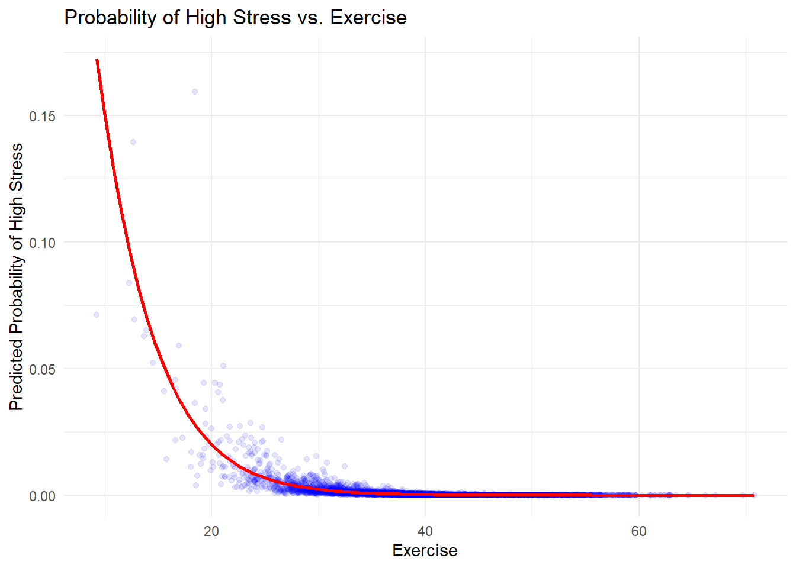
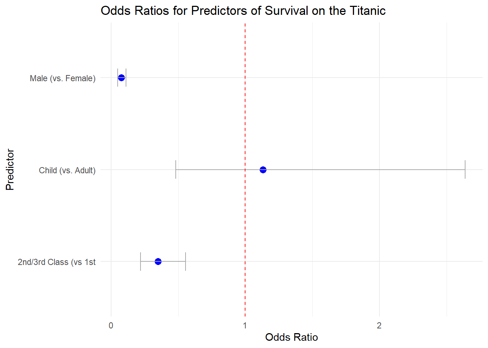
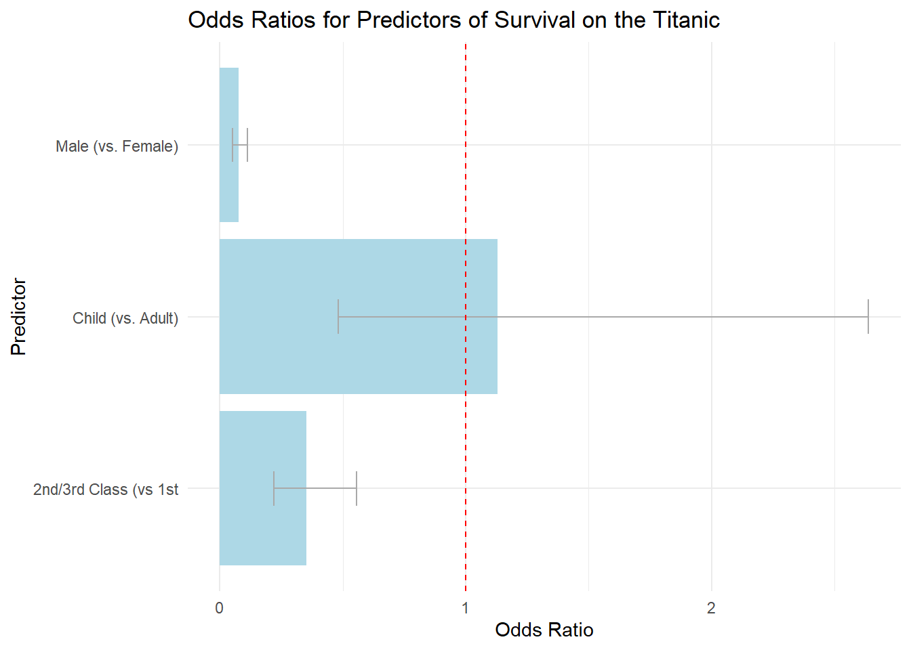
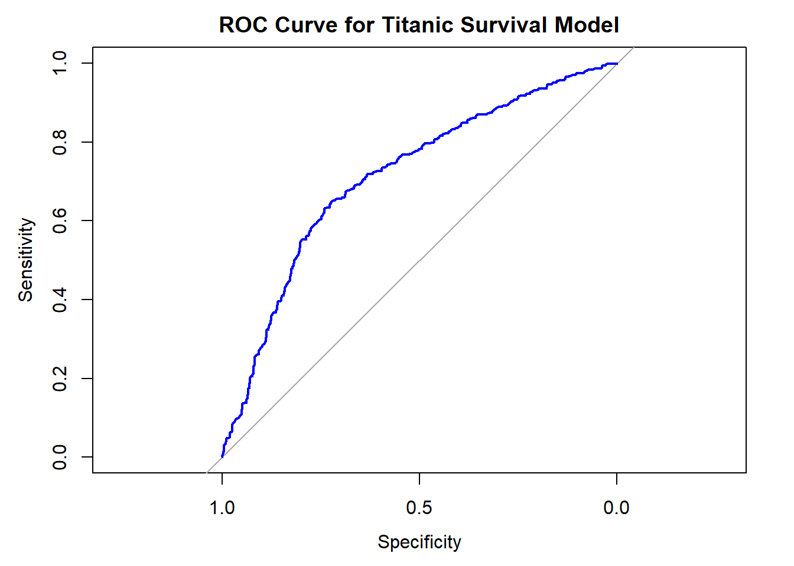
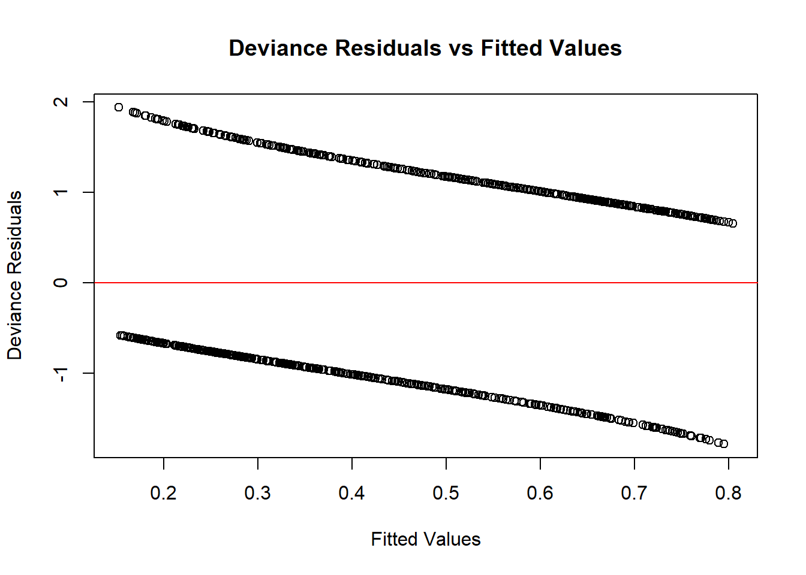

Chapter 13 Logistic Regression
13.1 Introduction to Logistic Regression
13.1.1 What is Logistic Regression?
Logistic regression is a statistical method that helps us understand the relationship between one or more independent variables and a binary dependent variable. Unlike linear regression, where we predict a continuous outcome (like exam scores or reaction times), logistic regression is used when the outcome we’re interested in has only two possible values. These values could represent categories like “yes” or “no,” “success” or “failure,” or “healthy” or “ill.”
For example, imagine you’re a psychologist studying the factors that contribute to whether someone is likely to develop symptoms of depression. You might have data on several factors—age, gender, stress levels, social support, and more—but your outcome of interest is binary: either the person has symptoms of depression or they don’t. Logistic regression allows you to model the probability that a person will fall into one category (e.g., having symptoms of depression) based on their scores on the other variables.
Why not use linear regression for this? The main reason is that linear regression is designed for continuous outcomes, and it assumes that the relationship between the predictors and the outcome is linear. However, when your outcome is binary, the linear regression model can predict probabilities that are less than 0 or greater than 1, which doesn’t make sense in the context of probabilities. Logistic regression, on the other hand, constrains the predicted values to fall within the 0 to 1 range, making it more appropriate for binary outcomes.
13.1.2 Applications of Logistic Regression in Psychology
Logistic regression is a powerful tool in psychology because it allows researchers to understand and predict outcomes that are categorical in nature. Here are a few examples of how logistic regression might be used in psychological research:
Predicting Depression: Suppose you want to study the likelihood that someone will develop depression based on a set of predictors like age, gender, stress levels, and social support. Logistic regression can help you determine which of these factors are significant predictors of depression and how they interact to affect the probability of developing depression.
Evaluating Treatment Effectiveness: Imagine you’re conducting a clinical trial to determine whether a new therapy is effective in reducing anxiety. Your outcome might be binary: either a participant’s anxiety is significantly reduced, or it isn’t. Logistic regression allows you to model the probability of treatment success based on various predictors like the type of therapy, the severity of the initial symptoms, and the participant’s demographic characteristics.
Understanding Behavioral Outcomes: Consider a study on risk behaviors in adolescents, where the outcome is whether a teenager engages in risky behavior like substance use. Predictors might include peer influence, parental monitoring, and individual traits like impulsivity. Logistic regression can help identify which factors increase the likelihood of risky behavior.
In each of these cases, logistic regression provides a way to model the relationship between predictors and a binary outcome, offering insights into which factors are most influential and how they combine to affect the probability of the outcome occurring. This makes logistic regression an essential tool for psychologists who want to understand complex, categorical outcomes in their research.
13.2 The Logistic Regression Model
13.2.1 Understanding the Logistic Function
Logistic regression might sound complicated at first, but it’s actually quite intuitive once you break it down. At its core, logistic regression is about modeling probabilities—specifically, the probability that a particular event will happen. This event could be anything from developing symptoms of depression to succeeding in a therapy program.
But here’s the thing: probabilities are always between 0 and 1. You can’t have a probability greater than 1 or less than 0. This is where the logistic function comes in. The logistic function is a special type of mathematical function that takes any input—positive or negative, large or small—and transforms it into a value between 0 and 1.
Let’s imagine you have some predictors, like the number of hours someone sleeps, how much they exercise, and the level of social support they have. You want to know how these factors together influence the probability that a person will experience high levels of stress.
In a regular linear regression, you might try to predict stress levels directly from these predictors. But since we’re dealing with a binary outcome (high stress vs. low stress), logistic regression uses the logistic function to model the probability of high stress.
Mathematically, the logistic regression model looks like this:
\[ \text{Probability of High Stress} = \frac{1}{1 + e^{-(\beta_0 + \beta_1 \times \text{Sleep Quality} + \beta_2 \times \text{Exercise} + \beta_3 \times \text{Social Support})}} \]
Here’s what this means:
- \(\beta_0\): This is the intercept, which is the value when all predictors are zero.
- \(\beta_1\), \(\beta_2\), \(\beta_3\): These are the coefficients that represent the impact of each predictor on the outcome. They tell you how much each predictor (like sleep quality or exercise) influences the probability of high stress.
- \(e\): This is the base of the natural logarithm (approximately 2.718), and it’s part of the logistic function that ensures the output is a probability between 0 and 1.
So, instead of predicting stress directly, logistic regression predicts the log of the odds of high stress. The “odds” is just the ratio of the probability of an event happening (high stress) to the probability of it not happening (low stress). The logit function is the natural logarithm of these odds.
The logistic function then transforms this logit back into a probability, making sure the prediction is always between 0 and 1.
13.2.2 Fitting a Logistic Regression Model
Now that we have an idea of what logistic regression does, let’s see how you can actually fit a logistic regression model in R. Don’t worry—it’s simpler than it sounds!
Suppose you’re studying the impact of sleep quality, exercise, and social support on the likelihood of experiencing high stress. Your outcome variable is binary, with 1 representing high stress and 0 representing low stress.
Here’s a step-by-step guide to fitting a logistic regression model in R:
- Prepare Your Data:
- Make sure your data is organized in a data frame with one column for the outcome variable (high stress vs. low stress) and columns for each predictor (sleep quality, exercise, social support).
library(ggplot2)
library(dplyr)
# Set seed for reproducibility
set.seed(123)
# Large sample size
n <- 5000
# Generate predictors with moderate variability
Sleep_Quality <- rnorm(n, mean = 6, sd = 1) # Moderate variability
Exercise <- rnorm(n, mean = 40, sd = 8) # Moderate variability
Social_Support <- rnorm(n, mean = 3, sd = 0.8) # Moderate variability
# Generate a binary outcome with moderate effect sizes to avoid perfect separation
High_Stress <- rbinom(n, 1, prob = plogis(-1 + 0.3 * Sleep_Quality - 0.2 * Exercise - 0.4 * Social_Support))
# Create the data frame
stress_data <- data.frame(High_Stress, Sleep_Quality, Exercise, Social_Support)
head(stress_data)## High_Stress Sleep_Quality Exercise Social_Support
## 1 0 5.439524 36.04661 4.896580
## 2 0 5.769823 49.02075 2.866550
## 3 0 7.558708 30.82440 3.741569
## 4 0 6.070508 51.84815 2.545479
## 5 0 6.129288 47.32953 3.180072
## 6 0 7.715065 42.68105 3.905589- Fit the Logistic Regression Model:
- Use the
glm()function in R, which stands for “generalized linear model.” You’ll specify the family as “binomial” to indicate that you’re dealing with a binary outcome.
- Use the
# Fit the logistic regression model
model <- glm(High_Stress ~ Sleep_Quality + Exercise + Social_Support,
data = stress_data,
family = binomial)- View the Model Output:
- You can use the
summary()function to see the coefficients and other details of the model.
- You can use the
##
## Call:
## glm(formula = High_Stress ~ Sleep_Quality + Exercise + Social_Support,
## family = binomial, data = stress_data)
##
## Coefficients:
## Estimate Std. Error z value Pr(>|z|)
## (Intercept) -0.20065 3.26462 -0.061 0.951
## Sleep_Quality 0.46071 0.43601 1.057 0.291
## Exercise -0.22968 0.05629 -4.080 4.5e-05 ***
## Social_Support -0.65992 0.51534 -1.281 0.200
## ---
## Signif. codes: 0 '***' 0.001 '**' 0.01 '*' 0.05 '.' 0.1 ' ' 1
##
## (Dispersion parameter for binomial family taken to be 1)
##
## Null deviance: 92.698 on 4999 degrees of freedom
## Residual deviance: 71.823 on 4996 degrees of freedom
## AIC: 79.823
##
## Number of Fisher Scoring iterations: 11- Interpret the Coefficients:
- The output will include the coefficients (\(\beta_1\), \(\beta_2\), etc.). Remember, these coefficients are in log-odds form, which can be tricky to interpret directly. To make them more interpretable, you can exponentiate the coefficients to get odds ratios.
## (Intercept) Sleep_Quality Exercise Social_Support
## 0.8181961 1.5851999 0.7947917 0.5168911- Predicting Probabilities:
- You can use the model to predict the probability of high stress for individuals with specific values for sleep quality, exercise, and social support.
# Predict the probability of high stress for new data
new_data <- data.frame(Sleep_Quality = 6, Exercise = 30, Social_Support = 3)
predicted_prob <- predict(model, newdata = new_data, type = "response")
predicted_prob## 1
## 0.001821238- Visualizing the Results:
- Visualization can help you better understand the relationship between predictors and the outcome. Now, let’s create a visualization of the relationship between one of the predictors (e.g., Sleep Quality) and the predicted probability of high stress.
# Adding predicted probabilities to the data
stress_data$Predicted_Prob <- predict(model, type = "response")
# Plotting the predicted probabilities
ggplot(stress_data, aes(x = Exercise, y = Predicted_Prob)) +
geom_point(alpha = 0.1, color = "blue") +
geom_smooth(method = "glm", method.args = list(family = "binomial"), se = FALSE, color = "red") +
labs(title = "Probability of High Stress vs. Exercise",
x = "Exercise", y = "Predicted Probability of High Stress") +
theme_minimal()
Explanation:
- Predicted Probabilities: The Predicted_Prob column contains the probabilities predicted by the logistic regression model.
- Visualization: The plot shows a clear relationship between Exercise and the probability of High Stress. The points represent individual data points, and the red line shows the logistic regression curve.
By following these steps, you can fit a logistic regression model, interpret the results, and even predict probabilities for new data. Logistic regression is a powerful tool that lets you explore the factors that contribute to binary outcomes, and with a bit of practice, you’ll find it to be an invaluable part of your statistical toolkit.
13.3 Interpreting Logistic Regression Coefficients
When working with logistic regression, one of the key steps is interpreting the coefficients that the model produces. Unlike linear regression, where coefficients represent changes in the outcome variable, logistic regression coefficients are in the form of log-odds. This can be a bit tricky to understand at first, but by converting these log-odds into odds ratios, we can interpret the results in a more intuitive way.
13.3.1 Exponentiating the Coefficients
13.3.1.1 What Are Log-Odds?
- In logistic regression, the model predicts the log-odds of the outcome variable.
- Log-odds refers to the natural logarithm of the odds that a certain event will happen. It’s the linear combination of your predictors (e.g., Sleep Quality, Exercise) multiplied by their respective coefficients.
13.3.1.2 Why Exponentiate the Coefficients?
- Log-odds are not very intuitive to interpret, so we exponentiate (raise
eto the power of) the coefficients to convert them into odds ratios. - This transformation helps us understand how changes in the predictor variables affect the odds of the outcome occurring.
13.3.1.3 How to Exponentiate the Coefficients:
- After fitting a logistic regression model, you’ll get coefficients for each predictor.
- To interpret these coefficients as odds ratios, you exponentiate them using the
exp()function in R.
Example:
13.3.1.4 Interpreting the Exponentiated Coefficients:
- If the exponentiated coefficient (odds ratio) is greater than 1, it means that as the predictor variable increases, the odds of the outcome occurring also increase.
- If the odds ratio is less than 1, it means that as the predictor increases, the odds of the outcome decrease.
Example Interpretation:
- Let’s say you have a predictor Sleep_Quality with an exponentiated coefficient (odds ratio) of 1.5. This means that for each one-unit increase in Sleep_Quality, the odds of experiencing high stress increase by 50% (since 1.5 is 50% more than 1). You can also achieve this number by subtracting 1 from the odds ratio value: 1.5 - 1 = 0.5 = 50% more
- If another predictor, Exercise, has an odds ratio of 0.8, it means that for each one-unit increase in Exercise, the odds of experiencing high stress decrease by 20% (since 0.8 is 20% less than 1). ou can also achieve this number by subtracting 1 from the odds ratio value: 0.8 - 1 = -.2 = 20% less.
13.3.2 Understanding the Odds Ratio
13.3.2.1 What Is an Odds Ratio?
- The odds ratio is a way of comparing whether the probability of a certain event (like experiencing high stress) is the same for two different groups.
- It’s the ratio of the odds of the event occurring in one group compared to the odds of it occurring in another group.
13.3.2.2 How to Interpret Odds Ratios:
- Odds Ratio > 1: The event is more likely in the first group.
- Example: An odds ratio of
2means the event is twice as likely in the first group compared to the second.
- Example: An odds ratio of
- Odds Ratio < 1: The event is less likely in the first group.
- Example: An odds ratio of
0.5means the event is half as likely in the first group.
- Example: An odds ratio of
- Odds Ratio = 1: The event is equally likely in both groups.
13.3.2.3 Practical Example:
Suppose you are studying the likelihood of high stress among college students based on Sleep_Quality, Exercise, and Social_Support.
- If
Social_Supporthas an odds ratio of0.7, it means that with every one-unit increase in social support, the odds of experiencing high stress decrease by 30%. - If
Exercisehas an odds ratio of1.2, it indicates that with each additional hour of exercise, the odds of experiencing high stress increase by 20%.
13.3.2.4 Writing Out the Results:
When reporting the results of a logistic regression in a paper or report, you might say something like:
- “For each one-unit increase in sleep quality, the odds of experiencing high stress decrease by 50%, holding all other variables constant (OR = 0.5, p < .05).”
- “An additional hour of exercise is associated with a 20% increase in the odds of experiencing high stress (OR = 1.2, p < .05).”
These statements help make the statistical results more understandable to a broad audience, including those who might not be familiar with the technical details of logistic regression.
13.3.3 Summary:
- Log-Odds: The raw coefficients from logistic regression are in log-odds, which are not directly interpretable.
- Exponentiation: By exponentiating these coefficients, you can convert them into odds ratios, which are easier to interpret.
- Odds Ratios: Tell you how much the odds of the outcome increase or decrease with a one-unit change in the predictor.
Understanding and correctly interpreting odds ratios is key to making sense of logistic regression models, especially when applying these models to real-world research questions.
13.4 Visualizing the Odds Ratio
13.4.1 Step 1: Loading and Preparing the Titanic Dataset
First, we’ll load the Titanic dataset and prepare it for logistic regression analysis. We’ll create a binary variable Child that indicates whether a passenger is a child (under 18 years old) or an adult.
# Load the Titanic dataset from the titanic package
if(!require(titanic)){install.packages("titanic", dependencies=TRUE)}
library(titanic)
# Convert the Titanic dataset to a data frame
titanic_df <- as.data.frame(titanic::titanic_train) %>%
select(Age, Survived, Sex, Pclass) %>%
na.omit()
# Create a binary variable for Child (1 if Age < 18, 0 otherwise)
titanic_df$Child <- ifelse(titanic_df$Age < 18, 1, 0)
# Create a binary variable for Pclass (0 for 1st, otherwise if 2nd/3RD, then 1 )
titanic_df$Child <- ifelse(titanic_df$Pclass == 1, 0, 1)
# Convert Sex to numeric for the model
titanic_df$Sex <- as.numeric(as.factor(titanic_df$Sex)) - 1 # 0 = female, 1 = male
# Fit the logistic regression model
model <- glm(Survived ~ Sex + Child + Pclass,
data = titanic_df,
family = binomial)13.4.2 Step 2: Calculating the Odds Ratios
Next, we’ll calculate the odds ratios for each predictor by exponentiating the model coefficients. We’ll also calculate the confidence intervals for these odds ratios.
# Exponentiate the coefficients to get odds ratios
odds_ratios <- exp(coef(model))
# Calculate confidence intervals for odds ratios
conf_int <- exp(confint(model))## Waiting for profiling to be done...# Combine odds ratios and confidence intervals into a data frame
odds_ratios_df <- data.frame(
Predictor = c("Intercept", "Male (vs. Female)", "Child (vs. Adult)", "2nd/3rd Class (vs 1st"),
Odds_Ratio = odds_ratios,
Lower_CI = conf_int[, 1],
Upper_CI = conf_int[, 2]
)
odds_ratios_df## Predictor Odds_Ratio Lower_CI Upper_CI
## (Intercept) Intercept 29.44309004 15.17017433 59.4409578
## Sex Male (vs. Female) 0.07637175 0.05080861 0.1128107
## Child Child (vs. Adult) 1.13034158 0.48130489 2.6373722
## Pclass 2nd/3rd Class (vs 1st 0.35041381 0.21982094 0.554968013.4.3 Step 3: Creating a Dot Plot
We can use a dot plot to visualize the odds ratios and their confidence intervals. This helps to easily compare the impact of different predictors on survival.
library(ggplot2)
# Plotting the odds ratios with confidence intervals
ggplot(odds_ratios_df[-1, ], aes(x = Odds_Ratio, y = Predictor)) + # Exclude the intercept for clarity
geom_point(size = 3, color = "blue") +
geom_errorbarh(aes(xmin = Lower_CI, xmax = Upper_CI), height = 0.2, color = "darkgray") +
geom_vline(xintercept = 1, linetype = "dashed", color = "red") +
labs(title = "Odds Ratios for Predictors of Survival on the Titanic",
x = "Odds Ratio", y = "Predictor") +
theme_minimal()
13.4.4 Step 4: Creating a Bar Graph
Alternatively, we can visualize the odds ratios using a bar graph. This graph represents the magnitude of each odds ratio as the length of the bars.
# Plotting the odds ratios using a bar graph
ggplot(odds_ratios_df[-1, ], aes(x = Predictor, y = Odds_Ratio)) + # Exclude the intercept for clarity
geom_bar(stat = "identity", fill = "lightblue") +
geom_errorbar(aes(ymin = Lower_CI, ymax = Upper_CI), width = 0.2, color = "darkgray") +
geom_hline(yintercept = 1, linetype = "dashed", color = "red") +
labs(title = "Odds Ratios for Predictors of Survival on the Titanic",
x = "Predictor", y = "Odds Ratio") +
coord_flip() + # Flips the axes to make it easier to read
theme_minimal()
13.4.5 Interpreting the Graphs
Confidence Intervals: The confidence intervals around each odds ratio help indicate the precision of these estimates. If a confidence interval crosses 1, the effect may not be statistically significant.
Reference Line at 1: The red dashed line at 1 on the graph represents the point where the predictor has no effect on the odds of survival. Predictors with odds ratios significantly different from 1 (and whose confidence intervals do not overlap 1) are considered to have a meaningful effect.
13.4.6 Communicating the Results
Dot Plot: “The dot plot shows that being female or a child significantly increased the odds of surviving the Titanic disaster, while being in a lower class significantly decreased those odds.”
Bar Graph: “In the bar graph, we see that gender and child status were strong predictors of survival, with females and children having higher odds of surviving. The lower class passengers had much lower odds of survival compared to those in higher classes.”
13.4.7 Summary:
- Visualizing Odds Ratios: Dot plots and bar graphs are effective tools for visualizing the odds ratios from a logistic regression model, making it easier to compare the relative impact of different predictors.
- Interpreting the Results: These visualizations help in understanding which factors had the most significant effect on survival and how strong those effects were.
- Titanic Example: Using the Titanic dataset makes these concepts more relatable, showing real-world application of logistic regression in a historical context.
By visualizing odds ratios in this way, you can effectively communicate the results of a logistic regression analysis to a broad audience, making it easier to understand the key factors that influence an outcome.
13.5 Comparing Logistic Regression with Linear Regression
13.5.1 Why Not Use Linear Regression for Binary Outcomes?
Understanding the differences between logistic regression and linear regression is crucial, especially when dealing with binary outcomes. Although both methods are widely used, they serve different purposes and are suited for different types of data.
13.5.1.1 What is Linear Regression?
- Linear regression is a statistical method used to model the relationship between a continuous dependent variable and one or more independent variables.
- In linear regression, the outcome variable is expected to be continuous, such as predicting a person’s income based on their years of education.
13.5.1.2 Why is Linear Regression Inappropriate for Binary Outcomes?
- Binary Outcomes: A binary outcome is one that has only two possible values (e.g., 0 and 1, ex: Yes and No, Survived and Did Not Survive).
- Issue with Predictions: When you apply linear regression to a binary outcome, the model might predict values that are not within the range of 0 and 1. For instance, it could predict probabilities greater than 1 or less than 0, which do not make sense for binary outcomes.
Example:
- Imagine you are trying to predict whether a passenger on the Titanic survived (1 = Yes, 0 = No) using their gender, age, and ticket class. If you use linear regression, the model might predict a survival probability of 1.3 or -0.2, both of which are impossible because probabilities must lie between 0 and 1.
13.5.1.3 Limitations of Linear Regression in Modeling Probabilities
- Lack of S-Shaped Curve: Probabilities should follow an S-shaped curve (sigmoid function) where small changes in the predictor lead to larger changes in probability when the predictor is near the middle of its range. Linear regression assumes a straight-line relationship, which doesn’t capture this non-linear nature of probabilities.
- Heteroscedasticity: Linear regression assumes constant variance (homoscedasticity) across levels of the predictor variable. However, with binary outcomes, the variance is not constant (it’s heteroscedastic), leading to inefficient and biased estimates.
- Unbounded Predictions: As mentioned earlier, linear regression can produce predictions outside the 0-1 range, making it unsuitable for probability modeling.
Summary of Issues:
- Linear regression can lead to incorrect and nonsensical predictions when used with binary outcomes.
- It fails to capture the non-linear nature of probability distributions.
- It can produce biased estimates and unreliable results.
13.5.2 Advantages of Logistic Regression
13.5.2.1 What is Logistic Regression?
- Logistic regression is specifically designed to handle binary outcomes. It models the probability that a given outcome will occur (e.g., survival on the Titanic) based on one or more predictor variables.
- Instead of predicting a continuous outcome, logistic regression predicts the log-odds of the outcome and then transforms these log-odds back into a probability using the logistic function.
13.5.2.2 Advantages of Logistic Regression
1. Handles Non-Linearity in Probability:
- Sigmoid Curve: Logistic regression uses the logistic function to model probabilities, which results in an S-shaped curve. This curve correctly reflects how the probability of an outcome changes with different levels of the predictor variables.
- Bounded Predictions: Logistic regression ensures that the predicted probabilities are always between 0 and 1, which is essential for a binary outcome.
2. Meaningful Interpretation Through Odds Ratios:
- Odds Ratios: Logistic regression provides coefficients that can be exponentiated to yield odds ratios, which are easily interpretable. For example, an odds ratio tells you how much more likely the outcome is to occur with a one-unit increase in the predictor variable.
- Practical Application: In our Titanic example, logistic regression can tell us how much more likely it was for a female passenger to survive compared to a male passenger, holding other factors constant.
3. Appropriate for Binary Data:
- Correct Handling of Binary Outcomes: Unlike linear regression, logistic regression is designed to work with binary outcome data. It respects the nature of binary outcomes and provides more accurate and reliable predictions.
- Probabilistic Framework: Logistic regression operates within a probabilistic framework, which is more suitable for binary data. This framework allows for the estimation of probabilities, odds ratios, and confidence intervals, all of which are meaningful in binary outcome contexts.
4. Robustness to Data Characteristics:
- No Need for Normality: Logistic regression does not assume that the predictor variables are normally distributed, making it more robust to different data characteristics. -
Handles Outliers: Logistic regression is less sensitive to outliers in the predictor variables compared to linear regression, making it more reliable in practice.
Summary of Advantages:
- Logistic regression correctly models the probability of binary outcomes with predictions that always fall between 0 and 1.
- It offers interpretable results through odds ratios, making it easy to understand the impact of different predictors on the outcome.
- It is robust and appropriate for binary data, providing reliable and meaningful insights in contexts like psychological research, medical studies, and more.
13.5.3 Recap:
- Linear Regression is not suitable for binary outcomes due to issues with unbounded predictions, lack of non-linearity, and inefficiency.
- Logistic Regression is the preferred method for binary outcomes because it models probabilities correctly, provides interpretable results through odds ratios, and handles the characteristics of binary data effectively.
By understanding these differences, you can choose the appropriate statistical method for your research and ensure that your analyses are both accurate and meaningful.
13.6 Checking Model Fit
After fitting a logistic regression model, it’s crucial to assess how well the model fits the data. Checking model fit helps ensure that your model is accurately representing the relationship between the predictors and the outcome. If the model doesn’t fit well, the conclusions you draw may be misleading.
13.6.1 Why Check Model Fit?
- Accuracy: A well-fitting model accurately predicts the outcome variable and reflects the true relationships between the predictors and the outcome.
- Reliability: Good model fit ensures that your results are reliable and can be generalized to other data.
- Identifying Issues: Assessing model fit can help identify problems like overfitting, underfitting, or mis-specified models.
13.6.2 Methods for Assessing Model Fit in Logistic Regression
13.6.2.1 1. Hosmer-Lemeshow Test
13.6.2.1.1 What is the Hosmer-Lemeshow Test?
- The Hosmer-Lemeshow test is a statistical test that assesses whether the observed event rates match expected event rates in subgroups of the dataset.
- It is particularly useful for checking the goodness-of-fit of logistic regression models.
13.6.2.1.2 How Does It Work?
- The data is divided into deciles based on predicted probabilities. For each decile, the observed number of events (e.g., survived) is compared to the expected number of events based on the model’s predictions.
- The test then calculates a Chi-square statistic to determine whether there is a significant difference between the observed and expected values.
13.6.2.1.3 Interpreting the Hosmer-Lemeshow Test:
- p-value > 0.05: If the p-value is greater than 0.05, the model has a good fit, indicating no significant difference between observed and expected values.
- p-value < 0.05: If the p-value is less than 0.05, it suggests that the model may not fit the data well.
Example in R:
# Install and load the necessary package
if(!require(ResourceSelection)){install.packages("ResourceSelection", dependencies=TRUE)}## Loading required package: ResourceSelection## Warning: package 'ResourceSelection' was built under R version 4.3.3## ResourceSelection 0.3-6 2023-06-27library(ResourceSelection)
# Creating a new version of the dataset
set.seed(123)
titanic_data <- data.frame(
Survived = rbinom(1000, 1, prob = 0.5),
Sex = factor(sample(c("Male", "Female"), 1000, replace = TRUE)),
Age = sample(0:95, 1000, replace = TRUE), # Age range from 0 to 95
Pclass = factor(sample(1:3, 1000, replace = TRUE), levels = c("1", "2", "3"))
)
# Adjust the dataset to create significant relationships
titanic_data$Survived[titanic_data$Sex == "Female"] <- rbinom(sum(titanic_data$Sex == "Female"), 1, prob = 0.7)
titanic_data$Survived[titanic_data$Pclass == "1"] <- rbinom(sum(titanic_data$Pclass == "1"), 1, prob = 0.8)
titanic_data$Survived[titanic_data$Pclass == "3"] <- rbinom(sum(titanic_data$Pclass == "3"), 1, prob = 0.2)
titanic_data$Survived[titanic_data$Age > 40] <- rbinom(sum(titanic_data$Age > 40), 1, prob = 0.3)
titanic_data$Survived[titanic_data$Age <= 40] <- rbinom(sum(titanic_data$Age <= 40), 1, prob = 0.7)
# Ensure Pclass has "1" as the reference level
titanic_data$Pclass <- relevel(titanic_data$Pclass, ref = "1")
# Fit the logistic regression model
model <- glm(Survived ~ Sex + Age + Pclass, data = titanic_data, family = binomial)
# Generate fitted values (predicted probabilities)
titanic_data$predicted_prob <- model$fitted.values
# Perform the Hosmer-Lemeshow test with default binning
hoslem_test <- hoslem.test(titanic_data$Survived, model$fitted.values, g = 10)
hoslem_test##
## Hosmer and Lemeshow goodness of fit (GOF) test
##
## data: titanic_data$Survived, model$fitted.values
## X-squared = 15.22, df = 8, p-value = 0.05513.6.2.2 2. ROC Curve (Receiver Operating Characteristic)
13.6.2.2.1 What is an ROC Curve?
- An ROC curve is a graphical plot that illustrates the diagnostic ability of a binary classifier system as its discrimination threshold is varied.
- It shows the trade-off between the true positive rate (sensitivity) and the false positive rate (1 - specificity).
13.6.2.2.2 How to Interpret an ROC Curve:
- Area Under the Curve (AUC): The area under the ROC curve (AUC) is a single number summary of the model’s ability to discriminate between those with and without the outcome.
- AUC = 0.5: The model has no discriminative ability (equivalent to random guessing).
- AUC < 0.7: The model has poor discriminative ability.
- AUC = 0.7 - 0.8: The model has acceptable discriminative ability.
- AUC = 0.8 - 0.9: The model has good discriminative ability.
- AUC > 0.9: The model has excellent discriminative ability.
Example in R:
# Install and load the pROC package for ROC curve analysis
if(!require(pROC)){install.packages("pROC", dependencies=TRUE)}
library(pROC)
# Generate the ROC curve
roc_curve <- roc(titanic_data$Survived, model$fitted.values)
# Plot the ROC curve
plot(roc_curve, col = "blue", main = "ROC Curve for Titanic Survival Model")
## Area under the curve: 0.713613.6.2.2.3 Interpreting the ROC Curve:
- The ROC curve provides a visual assessment of how well your model distinguishes between the two classes (e.g., survived vs. did not survive).
- The closer the curve follows the top-left corner, the better the model is at predicting outcomes.
- The AUC value summarizes this performance. An AUC closer to 1 indicates a better-fitting model.
13.6.3 Techniques for Diagnosing Potential Issues
13.6.3.1 1. Residual Analysis
- Deviance Residuals: In logistic regression, deviance residuals can help identify outliers or cases where the model doesn’t fit well.
- Large residuals suggest that the model is not fitting certain observations well, which may indicate potential issues.
- Plotting deviance residuals against predicted values can reveal patterns that suggest a poor fit or mis-specification.
Example in R:
# Calculate deviance residuals
deviance_residuals <- residuals(model, type = "deviance")
# Plot deviance residuals
plot(model$fitted.values, deviance_residuals,
xlab = "Fitted Values", ylab = "Deviance Residuals",
main = "Deviance Residuals vs Fitted Values")
abline(h = 0, col = "red")
13.6.3.2 2. Multicollinearity
- Variance Inflation Factor (VIF): High VIF values indicate multicollinearity, where predictors are highly correlated with each other, potentially distorting the model’s coefficients.
- Multicollinearity doesn’t necessarily affect model fit but can make it harder to interpret the results.
Example in R:
# Install and load the car package for VIF calculation
if(!require(car)){install.packages("car", dependencies=TRUE)}## Loading required package: car## Loading required package: carData##
## Attaching package: 'car'## The following object is masked from 'package:dplyr':
##
## recode## The following object is masked from 'package:psych':
##
## logit## GVIF Df GVIF^(1/(2*Df))
## Sex 1.009713 1 1.004845
## Age 1.007702 1 1.003844
## Pclass 1.002695 2 1.00067313.6.4 Summary of Diagnostic Techniques:
- Hosmer-Lemeshow Test: Assesses how well the predicted probabilities match the observed outcomes.
- ROC Curve: Provides a graphical representation of the model’s ability to discriminate between classes, summarized by the AUC.
- Residual Analysis: Helps identify outliers or poorly fitted observations.
- Multicollinearity Check: Ensures that the predictors are not too highly correlated, which can affect model interpretation.
13.6.5 Recap:
- Model Fit Assessment: Checking model fit is essential to ensure that your logistic regression model accurately represents the data.
- Hosmer-Lemeshow Test: Useful for determining if the model’s predicted probabilities align with actual outcomes.
- ROC Curve: Provides a comprehensive view of the model’s discriminative ability, summarized by the AUC.
- Diagnostic Techniques: Residual analysis and VIF help diagnose potential issues such as outliers and multicollinearity.
By carefully assessing and diagnosing model fit, you can ensure that your logistic regression model is robust, reliable, and provides meaningful insights into the relationships between predictors and the outcome.
13.7 Chapter Summary
13.7.1 Recap of Key Concepts
In this chapter, we explored the fundamentals of logistic regression, a powerful statistical method used to model the probability of a binary outcome. We covered several key concepts:
Logistic Regression Basics: We introduced logistic regression as the appropriate method for predicting binary outcomes, explaining how it differs from linear regression and why it’s essential for modeling probabilities that fall between 0 and 1.
Interpreting Coefficients and Odds Ratios: We discussed how to interpret the coefficients from a logistic regression model by exponentiating them to obtain odds ratios, which provide a meaningful way to understand the effect of each predictor on the outcome.
Graphing Results: We demonstrated how to visualize the results of a logistic regression using various types of graphs, including logistic regression curves, dot plots, and bar graphs. These visualizations help to clearly communicate the impact of different predictors on the probability of the outcome.
Checking Model Fit: We reviewed methods for assessing the fit of a logistic regression model, such as the Hosmer-Lemeshow test and ROC curves. Additionally, we discussed techniques for diagnosing potential issues with the model, including residual analysis and checking for multicollinearity.
13.7.2 Final Thoughts
Logistic regression is an indispensable tool in psychological research, offering a robust way to model and interpret binary outcomes. Whether you’re predicting the likelihood of depression, understanding the impact of different treatments, or exploring factors that influence behavior, logistic regression provides valuable insights that can guide research and decision-making.
Understanding how to fit, interpret, and check the fit of logistic regression models is crucial for conducting rigorous and meaningful research. As you continue to develop your skills, practicing with real-world data will help solidify your understanding and enhance your ability to apply these concepts effectively.
By mastering logistic regression, you’ll be better equipped to tackle complex research questions and contribute valuable findings to the field of psychology and beyond.
13.8 Practice Exercises
13.8.1 Exercise 1: Fitting a Logistic Regression Model
Task: Using the provided dataset, fit a logistic regression model to predict whether a person survived the Titanic disaster (Survived), based on the predictors Sex, Age, and Pclass. Interpret the exponentiated coefficients (odds ratios) for each predictor.
# Load necessary packages
library(dplyr)
# Generate a new example dataset with significant effects
set.seed(123)
titanic_data <- data.frame(
Survived = rbinom(800, 1, prob = 0.5),
Sex = factor(sample(c("Male", "Female"), 800, replace = TRUE)),
Age = sample(0:95, 800, replace = TRUE),
Pclass = factor(sample(1:3, 800, replace = TRUE), levels = c("1", "2", "3"))
)
# Adjust the dataset to create significant relationships
titanic_data$Survived[titanic_data$Age > 10] <- rbinom(sum(titanic_data$Age > 10), 1, prob = 0.1)
titanic_data$Survived[titanic_data$Age <= 10] <- rbinom(sum(titanic_data$Age <= 10), 1, prob = 0.9)
titanic_data$Survived[titanic_data$Sex == "Female"] <- rbinom(sum(titanic_data$Sex == "Female"), 1, prob = 0.7)
titanic_data$Survived[titanic_data$Pclass == "1"] <- rbinom(sum(titanic_data$Pclass == "1"), 1, prob = 0.8)
titanic_data$Survived[titanic_data$Pclass == "3"] <- rbinom(sum(titanic_data$Pclass == "3"), 1, prob = 0.2)
# Ensure Pclass has "1" as the reference level
titanic_data$Pclass <- relevel(titanic_data$Pclass, ref = "1")
# Fit the logistic regression model
# Exponentiate coefficients to get odds ratios
# Display the results- Interpretation:
13.8.2 Exercise 2: Visualizing Logistic Regression Results
Task: Create a plot to visualize the predicted probabilities of survival (Survived) based on Age. Use the ggplot2 package to plot the logistic regression curve.
13.8.3 Exercise 3: Interpreting Odds Ratios
Task: Interpret the odds ratios obtained in Exercise 1. Specifically, discuss the practical significance of the odds ratios for Sex, Age, and Pclass in predicting survival on the Titanic.
# Odds ratios interpretation (example text)
# Odds ratio for Sex (Female vs. Male): If the odds ratio for 'Female' is 2.5, it means that females were 2.5 times more likely to survive compared to males, holding all other factors constant.- Odds Ratios: